Faiz. Borcun asıl maliyeti.
Ödenmeyen dönem borcuna işleyen akdi faiz.
FinScout gösterir: her ay ne kadar faiz ödediğini ve yıllık toplamını.
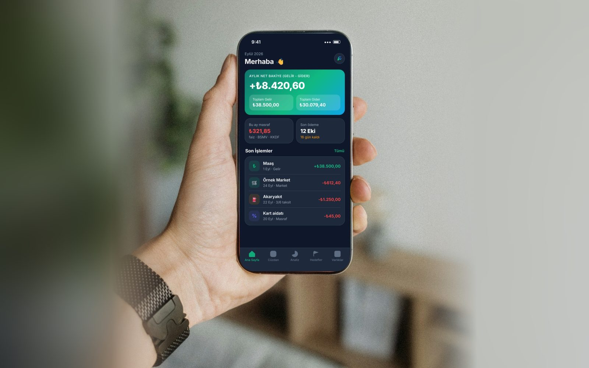
Kredi kartı ekstreni ve maaş bordronu telefonunda okur; faizi, vergiyi ve ücretleri tek tek gösterir.
Kredi kartı ekstresi ve maaş bordrosu PDF'lerini yüklersin; FinScout faiz, gecikme faizi, BSMV, KKDF, kart aidatı ve EFT/FAST ücretlerini ayrı ayrı çıkarır, aylık ve yıllık toplar. Ekstreyi bankanın dönem toplamıyla karşılaştırır, tutmuyorsa söyler. Dosyaların telefonunda işlenir, sunucuya gönderilmez.
Ekstremin sonunda tek bir toplam görüyordum ama içinde ne olduğunu bilmiyordum. FinScout'ta faizi, BSMV'yi ve kart aidatını ayrı ayrı gördüm; hangi ay neden daha fazla ödediğimi artık biliyorum.
— Örnek senaryo gerçek kullanıcı yorumu değildir
Ekstreni yükle, FinScout kalem kalem ayırsın.
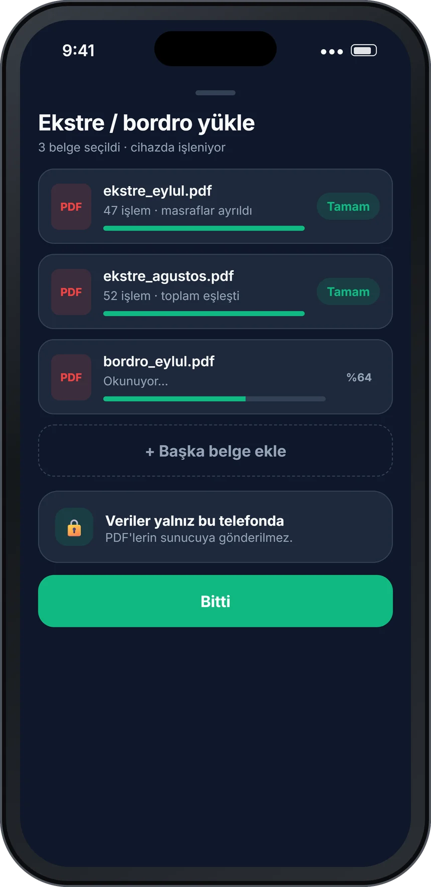
Eylül ekstresinden ayrılan masraf kalemleri (örnek veri).
Ekstrende "toplam" diye geçen tutarın içinde birden çok kalem var. FinScout her birini ayrı listeler; aylık ve yıllık toplamlarını Analiz › Masraflar ekranında görürsün.
Ödenmeyen dönem borcuna işleyen akdi faiz.
FinScout gösterir: her ay ne kadar faiz ödediğini ve yıllık toplamını.
Son ödeme tarihi kaçtığında eklenen faiz.
FinScout gösterir: hangi dönemde geciktiğini ve bunun sana kaça mal olduğunu.
Banka ve sigorta muameleleri vergisi; faiz ve bazı ücretlerin üzerine eklenir.
FinScout gösterir: BSMV satırlarını ayrı kalem olarak, aylık ve yıllık.
Kaynak Kullanımını Destekleme Fonu; faiz üzerinden hesaplanır.
FinScout gösterir: KKDF tutarını faizden ayrı, kendi satırında.
Kartın için alınan yıllık ya da dönemsel ücret.
FinScout gösterir: aidatın ne zaman ve ne kadar alındığını.
Para transferlerinde alınan işlem ücretleri.
FinScout gösterir: kaç işlem yaptığını ve bu ücretlerin toplamını.
Uygulamayı açtığında ayın özetini görürsün. Gelir, gider, masraf ve taksitler aynı yerde; ayrı ayrı hesap yapmana gerek kalmaz. Sekmelere dokun, ekranları gez.
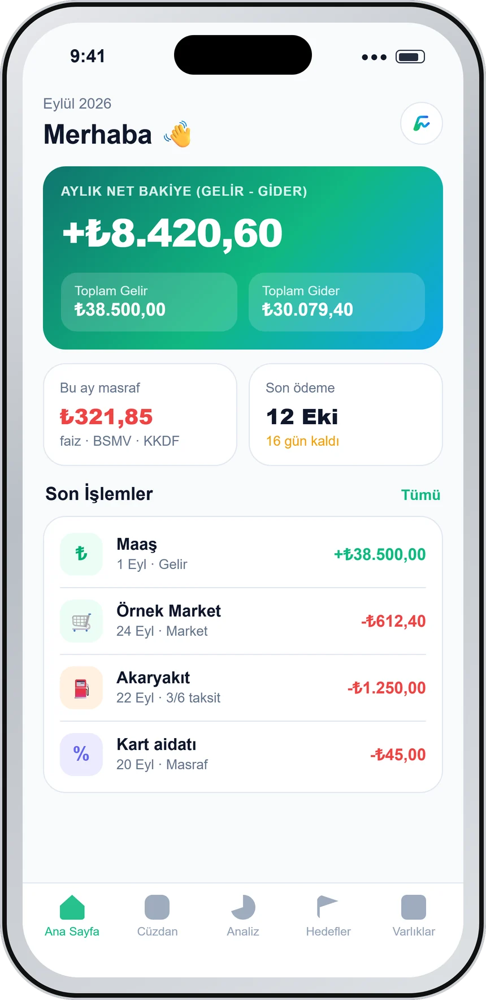
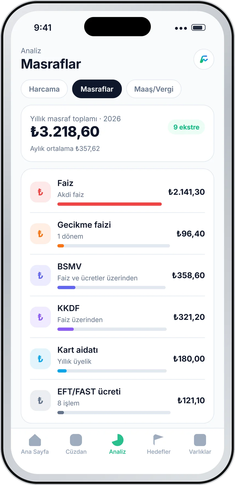
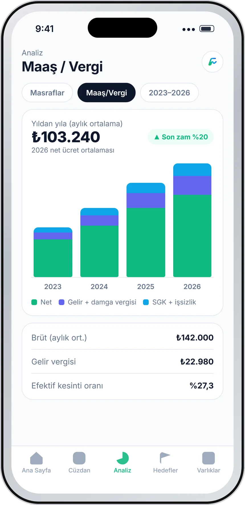
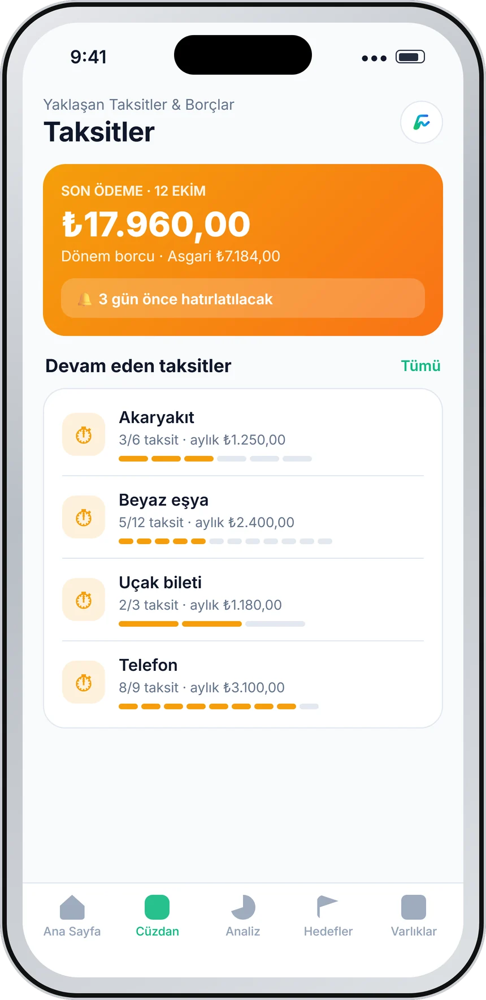
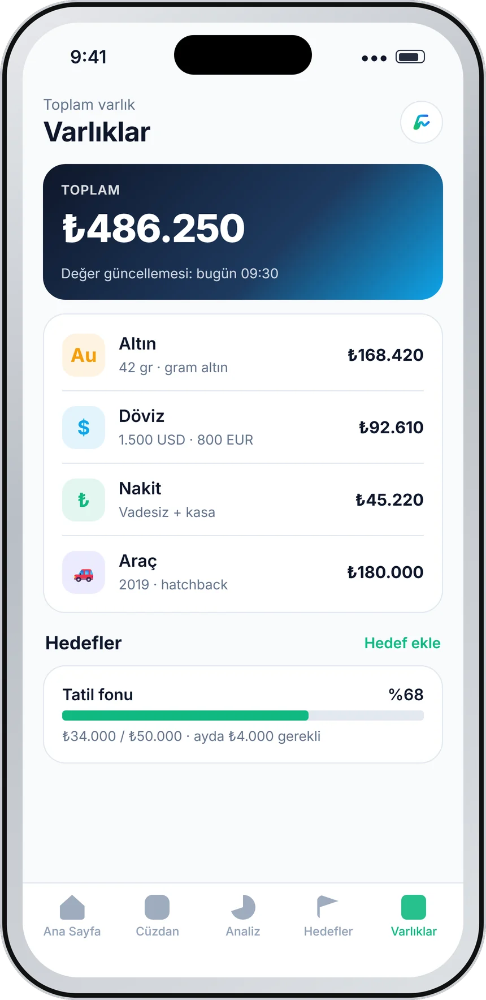
Ayın özeti bir bakışta. Gelir, gider, bu ayın masrafı ve son ödeme tarihi ana sayfada.
Faiz, BSMV, KKDF, aidat ve EFT/FAST ücretleri kalem kalem; aylık ve yıllık toplamlarıyla.
Bordrolarından yıllara göre brüt, net, vergi ve SGK. Ücretindeki değişimi (zam) ayrıca gösterir.
Devam eden taksitler ve son ödeme tarihi. Son ödemeden önce bildirimle hatırlatılırsın.
Altın, döviz, nakit ve araç tek listede; birikim hedeflerinin ilerlemesiyle birlikte.
Ücretsiz planda ayda 1 belge yükleyebilirsin.
Ekstren geldiğinde yüklersin, gerisini FinScout yapar. Masraflar ayrılır, toplam kontrol edilir, son ödeme hatırlatılır.
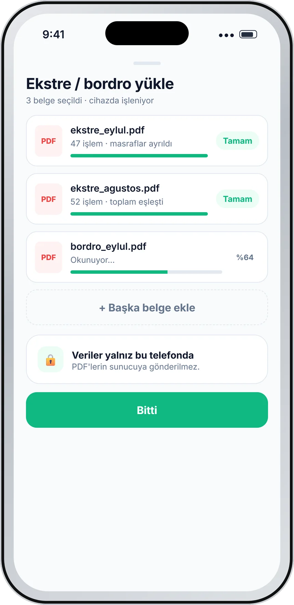
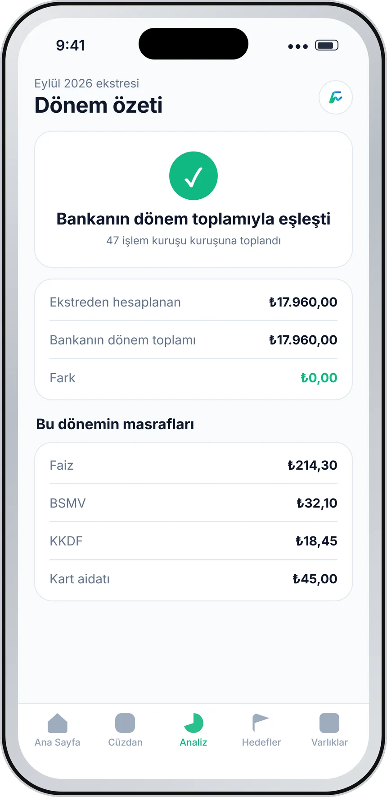
Kredi kartı ekstresi ve maaş bordrosu PDF'lerini aynı anda seçersin. Şifreli ekstrelerde parolayı girersin; parola kaydedilmez.
Dosyalar telefonunda işlenir, sunucuya gönderilmez. İşlemler, faiz, vergi ve ücretler ayrı satırlara düşer.
Okunan ekstre, bankanın bildirdiği dönem toplamıyla karşılaştırılır. Tutarsa "eşleşti" yazar; tutmazsa uyarı görürsün.
Taksitlerini ve son ödeme tarihini ekstreden görür, bildirimle hatırlatma alırsın.
Maaş bordrosundaki rakamlar dağınık görünür. FinScout onları yıllara göre sıralar ve brütünden netine giden yolu gösterir.
Yıllara göre brüt ve net. Bordrolarından her yılın aylık ortalamasını çıkarır, çubuk grafikte yan yana koyar.
Vergi ve SGK kesintileri. Gelir vergisi, damga vergisi ve SGK + işsizlik payı ayrı gösterilir; efektif kesinti oranını görürsün.
Zam tespiti. Bordrodaki ücret değiştiğinde FinScout bunu yakalar ve "son zam" olarak işaretler.
Filtreler ve dönem karşılaştırması. Yıl aralığı seçer, dönemleri karşılaştırırsın. Boş sütun, o ayın bordrosunun yüklenmediğini gösterir.
Ekstreni ve bordronu yükle, masraflarının ve maaşının tam tablosunu gör. Ücretsiz planla başlayabilirsin; reklam yok.
Google Play'de aç yakındaRakamlar tahmin değil, senin belgelerinden gelir. Her kart, FinScout'un bir belgeden neyi nasıl çıkardığını anlatır.
Faiz ve ücretler kalem kalem.
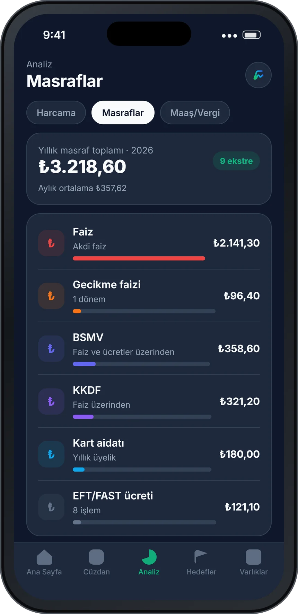
Okunan her ekstre sağlamasıyla gelir.
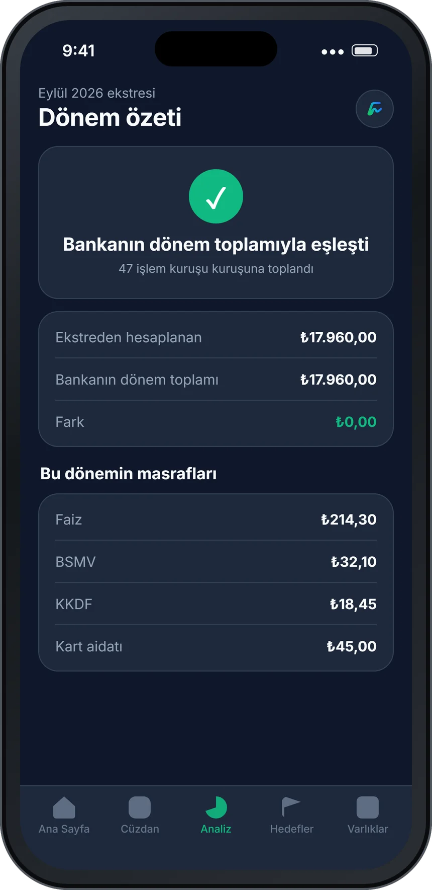
Brütten nete giden yol.
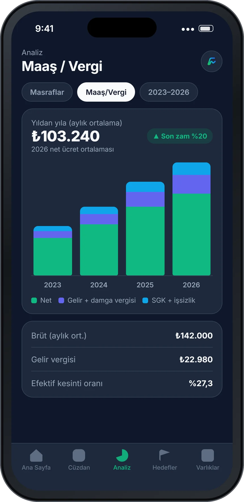
Birikimini de aynı yerde gör.
Kendi masraflarını bugün görmek ister misin?
Google Play'de indir yakındaAşağıdakiler örnek senaryolardır, gerçek kullanıcı yorumu değildir. FinScout'un bugün yapabildikleriyle, gündelik bir ayın nasıl görünebileceğini anlatır.
Yıllık masraf toplamını ilk kez görüp aidat ve BSMV'nin ne kadar tuttuğunu fark eder.
Gecikme faizinin hangi aylarda çıktığını görür, son ödeme hatırlatmasını açar.
Yıllara göre net ücretini ve vergi kesintisini karşılaştırır; son zammı tek bakışta görür.
Devam eden taksitleri ve kalan tutarları bir listede izler.
Tatil hedefine ayda ne kadar ayırması gerektiğini görür; altın ve dövizini aynı yerde tutar.
Aile paketiyle premium hakkını paylaşır; herkesin verisi kendine özeldir.
FinScout'un nasıl çalıştığı açık. Dosyaların telefonunda, rakamların bankanın toplamıyla kontrollü. Ayrıntılar Gizlilik Politikası'nda.
Ekstre ve bordro PDF'lerin kendisi yalnızca telefonunda okunur, hiç yüklenmez; çıkarılan işlemler başka bir cihazda devam edebilmen için hesabına bağlı şifreli yedeklenir.
Okunan her ekstre, bankanın bildirdiği dönem toplamıyla karşılaştırılır; tutmazsa uyarı görürsün.
Uygulama içinde reklam ağı veya davranış takip aracı bulunmaz; abonelikler Google Play Faturalandırma ile yönetilir.
Giriş için yalnızca ad ve e-posta adresin, Avrupa Birliği'nde (Frankfurt) barındırılan hesap altyapısında tutulur.
Ayarlar'dan hesabını ve sunucudaki kayıtlarını kalıcı olarak silebilirsin.
Abonelikler Google Play Faturalandırma ile satılır; istediğin zaman Google Play › Ödemeler ve abonelikler bölümünden iptal edebilirsin. Fiyatlar yayına özel değişebilir. Sorun mu var?
E-posta koduyla ya da Google ile giriş. Kart bilgisi, banka şifresi istemez; ekstreni sen seçersin.
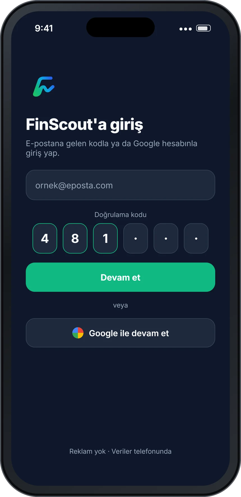
Uygulamayı indir ve e-posta koduyla ya da Google ile giriş yap
Google Play'de indir yakındaEkstreni ve bordronu yükle. Birden çok PDF tek seferde
Google Play'de indir yakındaMasraflarını kalem kalem gör, yıllık toplamı öğren
Google Play'de indir yakındaHayır. Kredi kartı ekstresi ve maaş bordrosu PDF'lerin kendisi yalnızca telefonunda işlenir, hiçbir zaman sunucuya yüklenmez. Buradan çıkan işlem kayıtların, başka bir cihazda devam edebilmen için hesabına bağlı şifreli olarak yedeklenir. Ayrıntılar için Gizlilik Politikası'na bakabilirsin.
İlk fazda desteklenen banka tektir; diğer bankalar sırayla eklenecek. Güncel liste uygulama içinde gösterilir.
Ayda 1 belge yükleyebilir; manuel gelir/gider girişini, hedefleri ve varlık takibini kullanabilirsin.
Aile yıllık pakette premium hakkı en fazla 4 kişiyle paylaşılır. Her üyenin finansal verisi kendine özeldir, diğer üyelerle paylaşılmaz.
Evet. FinScout tablet ekranlarına uyarlanmış bir düzenle de çalışır.
FinScout şu an Google Play'de dahili test aşamasında. Genel yayın tarihi netleştiğinde bu sayfa güncellenecek. Sorun ve öneriler için Destek sayfasına bakabilirsin.
Bu bir şey anlatıyor. Masraflarını görmek bir PDF uzağında.